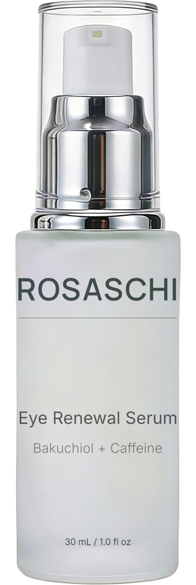

01
Immediate support
Caffeine
Selected to help the eye area appear refreshed and less fatigued as part of a lightweight daily treatment.

Advanced Botanical Skin Science
Meticulously chosen ingredients, transparent formula, and clean beauty without compromise.
Join the launch list
Rosaschi is developing a focused eye treatment for the visible appearance of crow’s feet, under-eye fine lines, and everyday wrinkle support.
The formula is being shaped to complement the delicate eye area with lightweight hydration and a thoughtful botanical system.
Two complementary pathways, considered for how skin looks now and how it may be supported with consistent use.
01
Immediate support
Selected to help the eye area appear refreshed and less fatigued as part of a lightweight daily treatment.
02
Progressive support
A botanical ingredient included to support the look of smoother, more refined skin through a consistent routine.
Selected ingredients
For a more awake, refreshed-looking eye area.
Botanical support for the appearance of smoothness and tone.
A conditioning botanical oil rich in skin-supportive lipids.
An antioxidant selected to complement daily skin care.
Multi-level hydration for a softly replenished appearance.
Rosaschi brings together long-standing herbal tradition and modern cosmetic formulation. Every component serves a clear purpose within the formula.
Respecting the natural origins of ingredients while formulating for modern skincare.
A restrained approach that values thoughtful balance over unnecessary complexity.
Thoughtfully developed through available research and responsible cosmetic science.
Early access
Join the pre-launch list for product updates and first access.